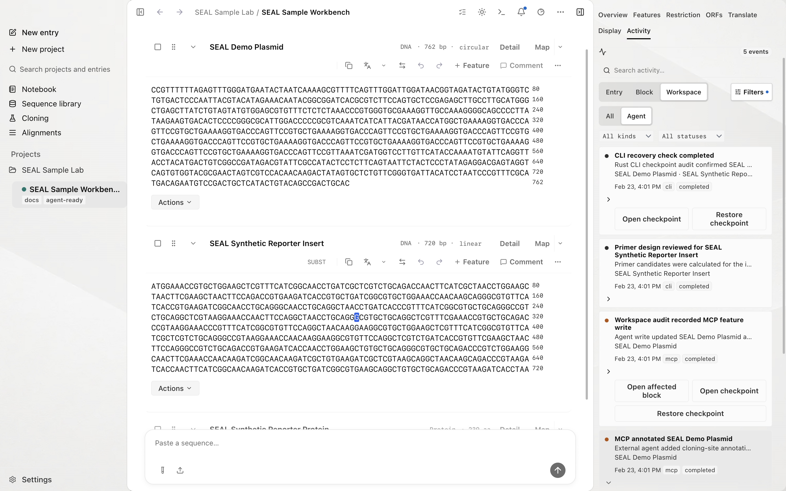

Agent control plane
This guide covers source and direct-edition tools. These tools are not bundled with the first Store release. Compare editions.
External agents such as Claude Code, Codex, and Gemini CLI read and write the same local workspace you use by hand. They connect over MCP, use explicit tools, and record each write in Activity.
The agent control loop
How it works
An agent connects to the SEAL MCP server and calls tools that operate on the same on-device SQLite database the desktop app and CLI use. There is no separate agent copy of your data. When an agent imports a sequence, creates a project, adds a feature, or runs a simulation, it writes to that one file.
SEAL runs the MCP server, the CLI, and the app against the same schema, the same PRAGMAs (WAL, synchronous=NORMAL, busy_timeout=5000, foreign_keys=ON), and the same migration runner, so concurrent writes from different processes are safe. A file watcher in the desktop app picks up writes within about 300 ms and rehydrates the interface, so a change an agent makes in a terminal shows up in the running app without a refresh.
For the full picture of which process reads the watcher events and how the database path is resolved, see the architecture overview.
For an agent's writes and the app's writes to share one file, set SEAL_DB_PATH to the same path in the agent's MCP config and before any CLI command. The native app launched from the Dock resolves to the platform application-data path, which has no relationship to your repo checkout.
Activity records
Activity records agent writes in the same place as changes made in the desktop app. Each canonical mutation records its source (writeSource is mcp or cli), the tool or command name, and the affected project, conversation, and block IDs in structured metadata.
Collapsed Activity rows read with human block names and source labels. Raw IDs stay in the structured metadata so they are available for debugging and export round trips without cluttering the timeline.
Rows are split by lifetime. Conversation-scoped rows live in workflow_events. Workspace, project, and conversation rows that must survive a conversation deletion live in the durable workspace_events table and appear through the Activity filter labeled Workspace / agent writes.

Checkpoints
Before a destructive block mutation, SEAL writes a checkpoint when the current schema can keep that checkpoint alive, so a recoverable change can be restored. Where a checkpoint would cascade away with the thing being deleted, such as removing a block or deleting a conversation, the row records a metadata snapshot instead. What agents can change lists the checkpoint behavior per operation.
Connect an agent
Each client takes a small MCP server block pointed at your database. Pick your agent:
For the shared server command, the database path override, and startup verification that applies to any MCP client, see MCP setup. The tools an agent can call are listed in the MCP tool reference.
Safety
Agent writes go directly into SQLite. SEAL does not put them behind an approval queue. It makes them observable instead: through writeSource, the Activity trail, provenance metadata, checkpoints where the operation is recoverable, and live UI sync. You see what an agent did, and you can recover the changes the schema can keep.
Before you connect an agent, run Agent Doctor from the Agent Control Plane panel to confirm the database path, the watcher, and the renderer are ready. To keep agent or test work off your live workspace, set SEAL_DB_PATH to a scratch file first.
For copyable prompts that ask an agent to work review-first, see prompts and safety. For the exact surfaces an agent can read and mutate, see what agents can change.